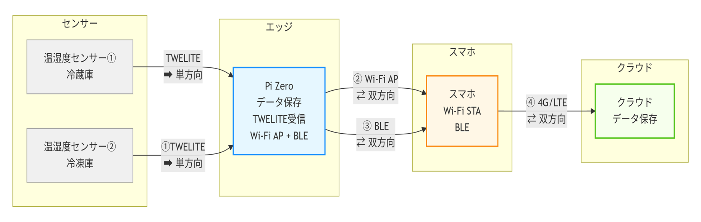
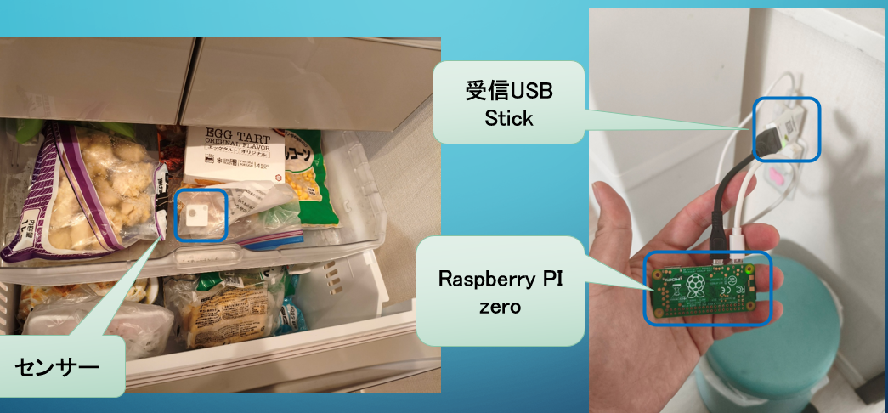
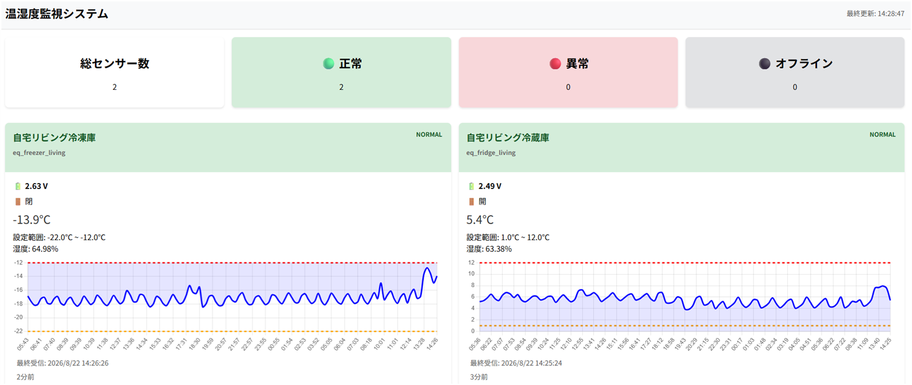

低い利益率
高価で複雑なIoTではなく、現場が導入しやすい低コストな仕組みが求められます。
インターネット接続を前提としないIoTの技術検証。 センサーからエッジ、スマートフォン、クラウドまで、 現場で使いやすい小規模・低コストなIoT構成を検証しています。
システム構成を見る高価で複雑なIoTではなく、現場が導入しやすい低コストな仕組みが求められます。
温度確認や記録など、継続的に発生する現場作業の負担を減らす必要があります。
既存設備を大きく改造せず、後付けで導入できる構成を目指します。
複雑なネットワーク構築を前提とせず、現場で扱いやすい仕組みを検証します。
Raspberry Pi ZeroとTWELITEセンサーで自動データ収集。 データをエッジ側に保存し、必要なときだけスマートフォン経由でクラウドへ同期します。
TWELITEによる継続的な温度モニタリングで、 設備劣化などによる緩やかな温度上昇を把握し、異常検知につなげます。
蓄積したデータを活用し、衛生管理に必要な記録・帳票作成の自動化を検証します。
冷蔵庫・冷凍庫などの既存設備を大きく改造せず、 センサーを設置して利用できる構成を目指します。
センサーからRaspberry Pi Zeroへデータを集約し、エッジ側で保存。 Raspberry Pi ZeroとスマートフォンはWi-Fi AP / BLEで接続し、 必要な場合のみスマートフォンから4G/LTE経由でクラウドへ同期します。

Raspberry Pi Zeroをエッジデバイスとして使用し、 TWELITEセンサーから温度データを収集・保存します。

収集したデータをWeb画面で可視化し、 センサー数、正常・異常・オフライン状態、現在温度、 設定範囲、温度推移、最終受信時刻などを確認できます。

AI-Driven Development / Spec-Driven Development
GEAR.indigoによる要件定義書・設計書の生成
Flask / SQLite
Jinja2 / JavaScript / Chart.js
Raspberry Pi Zero / TWELITE / USB Stick / ARIA
Cloudflare Workers / OpenCode / Claude
現在は技術検証段階です。
実環境での運用を想定しながら、低コスト・容易な導入・継続的なデータ収集を検証しています。